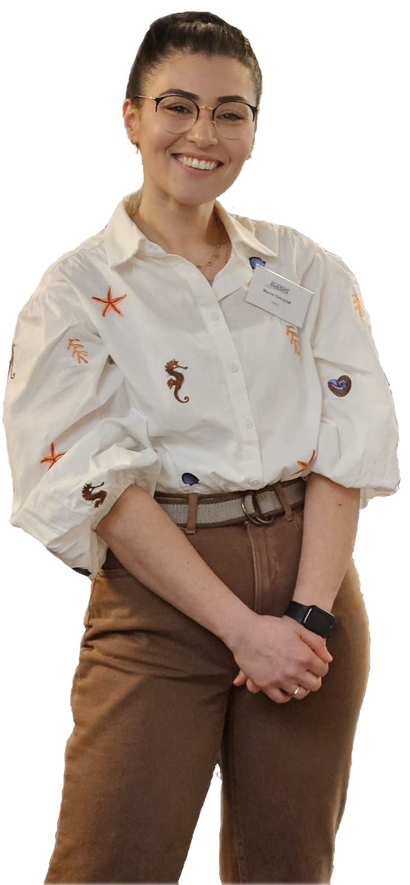

Hi, I'm Merve
I develop mass spectrometry methods that read the isotope fingerprints hidden inside molecules, to reveal where they came from and how they were made.

What I bring
Ten years of hands on research across analytical chemistry, geochemistry and biology, in academia and industry
Mass spectrometry method development
LC- and GC-Orbitrap MS with APCI, ESI and EI, GC-MS and IRMS. I design, validate and troubleshoot new workflows from sample preparation to final result.
Isotope data science
Custom R pipelines for large MS datasets, error propagation, theoretical models and multivariate classification, shared as open and reproducible code.
Applied and regulated science
GLP bioassays in industry, trace level contamination control, microbiology and source attribution for environmental and forensic questions.
Isotope fingerprinting of phytol by Orbitrap MS
The core method of my PhD, published in ACS Omega. It measures 13C in 26 fragments of a lipid at once from less than 1.2 µg of sample, with open data and R code.
Read the summary Article (DOI)